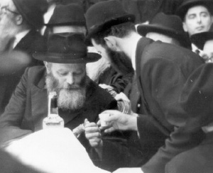

Purim: You Need to Know, in Order to Transcend Knowing.
What is a Chassidishe Purim all about? What opportunities are there that we don’t have the rest of the year? Mashke on Purim – permitted or forbidden? How do we focus on joy when we have worrisome things on our minds? * An interview and farbrengen with R’ Moshe Orenstein, mashpia in Yeshivas Tomchei T’mimim and the Chabad community in Tzfas.

The interview, which turned into a Chassidishe farbrengen, provided me with a new understanding of familiar Chassidic concepts like simcha, hiskashrus, l’chaim, mivtzaim, Ahavas Yisroel, and even ad d’lo yada, which suddenly appeared in a new, fascinating as well as compelling light.
WHAT IS A CHASSIDISHE PURIM?
Purim is a day seen as happy and lighthearted; in some places, even “liberating.” The v’nahapoch hu sometimes acquires negative associations. In Chabad Chassidus, the emphasis is on “throughout the entire year, they did not have an outside thought,” and this is a peak time for t’shuva done with joy. What then is Purim according to Chassidus?
By Chassidim, they knew what it says in Torah Ohr in the name of the Tikkunei Zohar, that Yom HaKippurim is only “like” Purim. The Rebbe explains that this concept is also brought and explained in Nigleh of Torah.
In the Gemara at the end of Yoma it says that there are four types of atonement, three of which are brought in Tanya: one who transgressed a positive mitzva and repented, does not move from there until he is forgiven. For prohibitions, t’shuva “hangs” (i.e. is provisional) and Yom Kippur atones. For sins deserving of kareis (excision of the soul) and the four executions of beis din, when he does t’shuva the t’shuva and Yom Kippur “hang” and suffering scours. The fourth category, chillul Hashem, is not brought in Tanya: “But someone who desecrated G-d’s name, there is no power in t’shuva to “hang” and Yom Kippur does not atone, and suffering does not scour, but they all “hang” and death scours.”
We see something astonishing here. It seems that the reason for the terrible decree of Purim, “to annihilate, kill and destroy, children and women on one day,” was chillul Hashem, according to one opinion, since they bowed to Nevuchadnetzar’s statue. According to another opinion, the decree was because “they enjoyed the party of that wicked one,” and according to Chazal, Achashverosh took out the vessels of the Mikdash in order to show that according to his calculation, the Jews would not be redeemed and the Beis HaMikdash would not be built.
The fact that they participated in the party and flattery of that wicked man was a great chillul Hashem and yet, we see that despite the punishment of “death scours,” that even Yom Kippur cannot atone for it, they did a complete t’shuva. Throughout that year, when the decree hung over their heads, not a single one of them considered jumping ship. Not only did nobody apostatize and thus save his life, since the decree was only on Jews, but such a thought did not even occur to anyone. Indeed, we see that the miracle was a case of v’nahapoch hu, in that the Jews who were meant to die, G-d forbid, prevailed over their enemies, since they were all under the dominion of Achashverosh. (This idea is discussed at length in the maamer of Purim 5716).
So Purim has a tremendous quality that not only erases and forgives sins or turns them into inadvertent sins, but turns them into merits.
We see though, that when Yom Kippur comes, every Jew is inspired, but when it comes to Purim, the day seems to pass without any special inspiration. How do you explain that?
It’s true, but that is the special quality of Purim. On Yom Kippur, there is the potential for mesirus nefesh, as we remove ourselves from things of this world and prepare to be moser nefesh like angels. On Purim it is actual mesirus nefesh.
It is specifically because this is a day that is so great that the “other side” makes every effort to “place a mask” on the holiness of the day so it should seem like an ordinary day. Frequently, the wondrous qualities of the day of Purim are missed because we are busy with nonsense.
We can also explain the difference in that we make lengthy preparations for Yom Kippur starting from Rosh Chodesh Elul, while Purim seems to suddenly arrive. The truth is though, that this itself is what makes Purim special. Although there is an aspect of hiddenness to Purim, with Hashem being hidden and not appearing openly in the Megilla and we don’t seem to sense the preciousness of the day, this is so we arouse ourselves through our avoda. It is this avoda which can lead to a v’nahapoch hu in the fulfillment of Torah and mitzvos, t’shuva and hiskashrus to the Rebbe.
According to this, it would seem we should daven at length on Purim and learn maamarei Chassidus, make a cheshbon ha’nefesh (spiritual accounting), etc. What actually happens is that there is hardly any time for oneself. There are the mitzvos of the day and then mivtzaim, and at the end of the day there is ad d’lo yada. How do the mivtzaim and l’chaims fit with the gravity of the day?
I will never forget the farbrengen of Purim 5736 with the Rebbe. In a sicha, the Rebbe spoke about this point (later it was printed in Likkutei sichos vol. 16). He asked, since according to Halacha you are supposed to get drunk and fall asleep, and we know that drunkenness is bad as the Rambam writes that gaiety and drunkenness are not simcha but wildness, how is it suddenly permissible?
The Rebbe explains that in the days of Mordechai and Esther, “they fulfilled and accepted – what they had already accepted,” i.e. this was the culmination of Mattan Torah. The Torah is the revelation of G-d’s will, a hidden treasure that created beings cannot grasp, which is why their souls flew out. In order to attain a state of Mattan Torah in Mordechai and Esther’s time, they were moser nefesh. In our days, says the Rebbe, the way to achieve hispashtus ha’gashmius – “divestment from physicality” is, as the Rambam paskens, through drinking until falling asleep.
Thus, on Purim we accomplish the “divestment from physicality” in a way that is similar to how prophecy is described by the Rambam. “They all do not see … except in a nighttime vision or by day after a deep sleep falls upon them … and all of them when prophesying, their limbs shake, and the power of the body falters, and their senses become confused …” And this is why the obligation of simcha on Purim is without limits, “until he gets drunk and falls into a drunken sleep,” when a person’s being and senses are subsumed.
Since we need to accept the Torah in a manner of “they fulfilled and they accepted,” there has to be a sort of “going out of the body” in the form of unlimited simcha. A Jew dances and rejoices as though he is bringing his son to the chuppa. Nothing disturbs him and he has no complaints against anyone. This is unbridled joy, when the Jew’s self-existence is gone. This is called “going out of oneself.” He only thinks about what the Rebbe wants of him.
I remember that when we heard this from the Rebbe, we were on a high. But then the Rebbe said, there is a deeper bittul, when a Jew does not think about himself at all and thinks only about bringing joy to others. For a person is closest to himself and the most important thing to a person is his own simcha. However, when he does not think about himself, about his personal joy, but devotes himself entirely to another Jew, with material tz’daka and especially spiritual tz’daka, i.e. bringing the joy of Yom Tov to others, this is the way to “divestment from physicality” and to receive all those lofty things of Mattan Torah, even greater than the loftiest level of ad d’lo yada.
This is the reason for the difference between the seventh generation and other generations that were involved in learning and davening with avoda on Purim. In our generation, instead of sitting and being wrapped up in oneself, you go and look for another Jew on the street, in your building, anywhere, and bring him the joy of Purim. Do more in gifts for the poor and mishloach manos and less in ad d’lo yada.
We see that throughout the years, the Rebbe’s farbrengen took place at the end of Purim, after everyone had finished mivtzaim.
HOW SHOULD A CHASSID REGARD MASHKE?
You mentioned saying l’chaim on Purim, ad d’lo yada. I won’t get into whether the Rebbe’s g’zeira applies to Purim or not. I would like to expand on the idea of the joy mashke brings versus the negative consequences. How is it possible that such a lofty and solemn day is characterized by copious drinking of l’chaim?
Remember that drinking on Purim is brought in Shulchan Aruch as Halacha. The question is how to understand it; the Rebbe himself spoke about it many times.
Furthermore, the Rebbe once said that unlike all other Yomim Tovim, Purim is described as a day of “feasting and rejoicing,” and not just for a moment or part of the day. This is unlike the mitzvos of reading the Megilla and mishloach manos and gifts for the poor, which can be done for a brief while during the day and then you have fulfilled your obligation.
At the Purim farbrengen 5749, the Rebbe said about someone who fulfills ad d’lo yada literally, “fortunate is he and fortunate is his lot and great is his merit and people should see and do as he does.” But before we rush to fill our cups with mashke, we need to remember that even during the times that the Rebbe spoke about saying l’chaim liberally, he said explicitly, “but not the bachurim.”
On another occasion, on Purim 5731, he said that balabatim “can fulfill the [obligation of] ‘inebriation’ literally, while the bachurim should get drunk on learning.”
Although there were certain years that the Rebbe said they should drink and there were instructions to this effect, we cannot derive anything from this since the Rebbe also said to keep the g’zeira (of no more than four little cups) on Purim.
(Smiling): A married man has responsibilities toward his wife and children, so there is the idea that “fear has a sobering effect.”
As to your question, the concept is discussed at length in Chassidic discourses and we cannot go into it here except briefly. Throughout the year there is the level of “knowing,” i.e. knowing and grasping G-dliness through learning Chassidus. This is how we fulfill the mitzva of “know the G-d of your father and serve Him with a whole heart.” Once a year, a Jew reaches “beyond the order of hishtalshlus” (the normal order of things), through avoda that comes from the essence of the soul. At this lofty level, there needs to be the “not knowing the difference between cursed is Haman and blessed is Mordechai.” That does not mean that a Chassid must drink until he screams “blessed is Haman” or the opposite …
Can we conclude from what the Rebbe said that it is legitimate to drink a lot of mashke on Purim?
It is an individual matter and a person needs to know himself, whether mashke on Purim brings him to Ahavas Yisroel, unity, to forgetting himself, or the opposite. Someone who is unsure should consult with his mashpia.
I remember that the mashpia, R’ Moshe Naparstek would say on Purim that “someone who all year is on the level of ‘yada’ – learning and delving into Chassidus, then on Purim he goes up to the level of ‘lo yada.’ But someone who was on the level of ‘lo yada’ all year, needs to start with ‘yada.’”
There is a sicha of the Rebbe where he clarifies the inyan of mashke on Purim and the right way to go about it. On Shabbos, Parshas Ki Sisa 5742, the Rebbe spoke at length about eradicating Amalek. The terminology he used was unusual and this is not the place to get into it, but it is recommended that every Chassid learn the sicha before Purim.
The Rebbe wondered, how is it that there are Chassidim who don’t care about eradicating Amalek? “On Purim, this Jew saw how his grandchild was dancing around on his little legs and making noise with a gragger when Haman’s name was mentioned and shouting, ‘down with Haman.’ And despite this, he himself was not moved!
“His little grandchild erases ‘Haman’ with innocence and enthusiasm and tells his little brother that now they need to shout ‘down with Haman,’ and seeing this, he melts with pleasure, as his grandson behaves the way the grandfather taught him. And despite all this, when it comes to him, he ‘does not get up and does not budge,’ ‘does not kneel nor bow.’ And when he asks why he should be shaken up, he should be told that ‘Amalek’ lives within him! It is just that he does not feel that Amalek lives within him. This is the greatest danger of all, for when he does not know nor feel it, it seems to him not to be Amalek and he does not fight against him.”
The Rebbe went on to point out the irony in “being more particular” with the halacha of drinking, “When speaking about the general idea of Purim, the annihilation of Amalek, avoda in a way that goes beyond measurement and limitation, ad d’lo yada – he does not know anything about what these mean! He learns in Chassidus about the essence of the soul, going above reason and above measurement and limitation, but he has no grasp of these concepts at all. It certainly does not affect him on an emotional level. But when you speak to him about ad d’lo yada, this is expressed by his getting drunk and going to sleep in a comfortable bed and by doing so, he fulfills his obligation of ad d’lo yada. These are lofty matters that are associated with the essence of the soul but he exchanges that for what was described above?!”
We already touched on the Rebbe’s explanation about the significance of sleep. And yet, let us make it clear that if Purim reminds someone of songs from kindergarten, costumes and masks, then there is a high likelihood that the mashke will bring him to letting loose. A Chassid who throughout the year has kabbalas ol and bittul is the one who can attain a high level on Purim and will not stumble by insulting others or scoffing. It won’t be possible that because of his drinking he will miss Maariv or Birkas HaMazon.
A PURIM FARBRENGEN WITH THE REBBE IS THE “DIAMOND IN THE CROWN”
It is known that at the Purim farbrengens over the years, there were many miracles and revelations. Tell us about Purim with the Rebbe.
I spent five Purims with the Rebbe. The uniqueness of the Purim farbrengens remains etched in my mind.
Miracles took place on Purim such as in 5713, when the Rebbe killed the evil Stalin by saying two maamarim. On Purim 5715 the Rebbe announced that whoever wants wealth should raise his hand, and there were other things like that. But every Purim farbrengen with the Rebbe was unusual. We all felt that the Purim farbrengen was the “diamond in the crown.”
Unlike Poilishe Admurim where there is a Purim Spiel, by the Rebbe there were many sichos and maamarim. Purim farbrengens went on for many hours, sometimes eight hours, in the course of which people saw how “the secret emerged” – special giluyim in Chassidus. You cannot always distill this wondrous feeling in words and quotes.
We went to the Rebbe’s Purim farbrengen at the end of a busy day on mivtzaim and after hearing the Megilla in the Rebbe’s presence. When we attended the Purim farbrengen, we felt that the Rebbe was raising us up above the ground. “Elokus as a given” was so palpable that you had to “innovate” that I also exist, that there is a world. This came along with the consummate joy that we saw on the Rebbe’s holy face. It is hard to describe to someone who did not experience Purim with the Rebbe.
In general, the talks of the Rebbe during the Purim farbrengens were an outpouring of a deep inner feeling of love for every fellow Jew, love for Torah and love for Hashem.
Can you tell us some anecdote from a farbrengen that is not well known?
Although I was not present at the Purim farbrengen 5715, I read a description of it written by R’ Yoel Kahn, the Rebbe’s chozer. In those days, it was customary that between sichos, during the niggunim, people went over to the Rebbe and asked for brachos. In the early years there was a line of people that extended to the Rebbe’s place. You could see that the Rebbe wasn’t quite pleased with this; there is a time for everything and the farbrengen is a time of loftiness. If a person is sitting during the sicha and thinking about what he wants to ask the Rebbe, he is not concentrating on what is being said.
In later years, the Rebbe sought to abolish this practice in order to reduce the frequency of pushing and pikuach nefesh. The Rebbe said there were times to ask for brachos.
That year, 5715, when the long line came to an end, the Rebbe spoke emotionally about the demand that is made on each person that at least once a year, on Purim, a person should not think about himself at all, about what he wants and needs, but only on what Hashem needs of him. The Rebbe said that despite this, people were unable to forget about themselves. One couldn’t forget about an operation and another about a deficit in his bank account and a third wanted to do away with his yetzer ha’ra here and now.
“If only there was one day when everything would be set aside. Although each person knows his situation, still, on Purim, one can reach the ultimate elevation. And this is Hashem’s request of the Jewish people (the Rebbe said the following sentence loudly) that each one of you work on himself that at least on Purim there will be a few moments when you forget about yourself, and consequently about the members of the household and consequently about what you lack …” And the Rebbe began a niggun d’veikus.
SERIOUS HISKASHRUS ON PURIM
For us, Purim calls to mind the maamer V’Ata Tetzaveh, the last one for now, in which the Rebbe explains that the Nasi Ha’dor is the one who nourishes the faith of the Jewish people of his generation and when you cleave to Mordechai, this strengthens your faith. How can we understand this in connection to us and our Rebbe?
Generally speaking, the concept of hiskashrus demands tremendous work. We cannot delude ourselves. Hiskashrus is work! To devote oneself to the Rebbe means to devote oneself to Hashem. There is no separating the two. You cannot say, I’m okay with the Rebbe, but with Hashem it’s a bit hard for me.
When the Rebbe demands something of a bachur, he needs to think “what will give nachas to the Rebbe,” “what does the Rebbe want of me,” and not “what do I feel will strengthen my hiskashrus.”
The mashpia, R’ Zushe Silberstein gave an example for this: There was a mekurav who wanted to please the Rebbe and to give him something special. He decided to give the Rebbe a gold ring. What’s the problem with that – Yosef HaTzaddik and Mordechai had rings from the king.
When he went to the Rebbe, the Rebbe tried to explain it to him, but he did not get it. In the end, the Rebbe suggested that the ring be sold and the money given to tz’daka. The man said: Okay, I will give the money to tz’daka and the ring to the Rebbe. Then the Rebbe motioned “double,” that he give twice the amount to tz’daka.
A similar thing happened when they replaced the Rebbe’s car. Whoever thought of doing this certainly did it out of love for the Rebbe. It is befitting for the Nasi Ha’dor to have a fine car. What happened though was, the Rebbe came out of 770 and said he would continue traveling in the same car he had been using up until that point. When they told the Rebbe that the car was parked at some small distance from 770, the Rebbe began walking in that direction.
Hiskashrus is not a question of how can I express my creativity, but what does the Rebbe expect of me.
R’ Eliyahu Friedman a”h, who founded our yeshiva in Tzfas, once noted that many Chassidim are zealous to fulfill the horaa to get an aliya to the Torah on the Shabbos before Yud Shevat, but what about the other horaa – to speak to the youth and inspire Ahavas Yisroel in them and tell them about the Rebbe. For that we need volunteers.
If we take for example, what the Rebbe said to the bachurim about the prohibition of drinking mashke, a bachur who cares deeply about hiskashrus needs to tremble and say, gevald, I just learned what the Rebbe says about getting drunk on Purim, this is speaking to me!
This is the point of V’Ata Tetzaveh, to see what the Rebbe, the Mordechai of our times, who nurtures the faith of the Chassidim by our cleaving to his instructions, demands of us.
How does one work on hiskashrus?
Let’s take an example of a young man who wants to be a doctor. He spends years studying, pays a fortune, and while he goes to school he works as a waiter to cover his expenses. He has no life, no money and not a minute to himself, but he knows that there is a goal that he is working toward.
Why shouldn’t we have the same work ethic? Why do some Chassidim think that such an exclusive commodity such as hiskashrus should come to them gratis?
Today, we want everything “instant,” without effort. We are the generation of the Artscroll Gemara, the Kehati Mishnayos, Shaarei Tosafos, and even a translated Zohar. So too when it comes to hiskashrus, many try to take shortcuts with hiskashrus and to be mekushar to the Rebbe without effort. We need to remember that the price for this exclusive commodity called hiskashrus is worth all the effort and the price is: toil of the soul and toil of the flesh, a broken heart and work and effort.
As a child, I wondered about the story about Hillel HaZakein who went up on the roof to learn Torah. He was barely able to sustain his household and still, he divided his earnings and used half of it to pay to get in to the Beis Ha’midrash and learn Torah. Then one time, when he did not have enough money, not even for food for his family, and he asked to be allowed into the beis Ha’midrash, he was refused. What was he asking for already?!
Apparently, his mesirus nefesh is what led to his becoming “Hillel HaZakein,” Nasi Yisroel. When you invest and are willing to put in the work toward something important, that demonstrates that you really think it’s important, and only then can you be successful. As they say, if it’s easy come, it’s easy go.
And what should a person do when it’s not as it should be? Purim is coming very soon, should we be happy or sad?
Of course, happy! Purim is the right time. Even if, up until now, things were not as they should have been, this is the time to make hachlatos and to make major changes. “These days are remembered and done” – the Jewish nation was at its lowest point, physically and spiritually. Physically, since every single Jew was slated for annihilation, G-d forbid, and spiritually, they had served avoda zara and made a chillul Hashem. And yet, “they fulfilled and accepted” with joy the Torah given at Mattan Torah.
You have to remember what the Rebbe says in the D’var Malchus of Parshas Truma, “When a Jew contemplates this [that when Adar enters, there is the power to transform even the darkness of ‘decreasing in joy’], this brings him to the greatest joy, a joy which also changes a person’s material circumstances, for he lives in this world according to the laws of nature.
“The attribute of simcha affects all aspects of man. When a person is happy, he lives a happy life with a simcha that affects everything he does and everything he comes in contact with. And not just him, but he brings joy to others around him. This simcha brings more success into everything he does and his entire life, as we plainly see.”
The Tzemach Tzedek once wrote to a Chassid of his, “A person needs to guard his thoughts, to think only happy thoughts. He must be careful not to speak about sad, gloomy things; on the contrary, to constantly display cheerful movements as though his heart is full of joy even though it is not so in his heart at the time… In the end it will truly be so.” (Igros Kodesh Admur Tzemach Tzedek p. 324)
This applies even if the situation is not as it ought to be, as the Megilla says, as an eternal and encouraging instruction for every Jew, “And if I come to the king against the law.” Even if the situation is not as it ought to be, Purim is the time to “go to the king,” to connect to the Rebbe with love.
THE REBBE GAVE US A CERTIFIED CHECK
The Rebbe spoke about simcha in general as a way of hastening the Geula and also, as a taste of the Geula. How do we connect simcha in general and on Purim in particular to the anticipation of the Geula?
The difference between a happy person and a person who is not happy is that a person who is not happy looks at what he doesn’t have, at what he wants and still does not have. A happy person is happy with what he already has.
Let us imagine a person who received a certified check for a million dollars, but who doesn’t even have money for the bus to get to the bank. He decides to walk and when he gets there, after a long walk, he discovers that the bank is closed. The next day, he goes back at the right time, but the teller tells him that he cannot cash the check for him, because he needs approvals from the manager, from the tax authorities etc.
On the one hand, he is very wealthy. He has a million dollars! On the other hand, he is poverty stricken without even money for the bus. The only thing he has is his perception for better or worse and the need to not despair until he gets the money.
The same is true for us and even more so. The Rebbe gave us a certified check, a promise and prophecy that Moshiach is coming. However, we look around and see galus. So it depends on what we focus on, on the galus and the hardships or the imminent Geula. This is what makes a Chassid happy, or the opposite.
Learning inyanei Moshiach and Geula needs to be done seriously (not just to be part of a raffle) because this is our “bread.” When a person eats, he is not eating because the Rebbe wants souls to be in bodies but because he is hungry and the food tastes good! The same should hold true for the learning and involvement in inyanei Moshiach and Geula and then, as the Rebbe says, a person begins “living” Geula.
Then, what he lacks won’t bother him. He will look at the remaining moments of galus from afar and he will be happy with what he has and what he will soon have when the Rebbe comes and the entire world will proclaim, Yechi Adoneinu Moreinu V’Rabbeinu Melech HaMoshiach L’olam Va’ed.
Mmarad. "Purim: You Need to Know, in Order to Transcend Knowing.." Beis Moshiach, no. 919 (March 12, 2014).